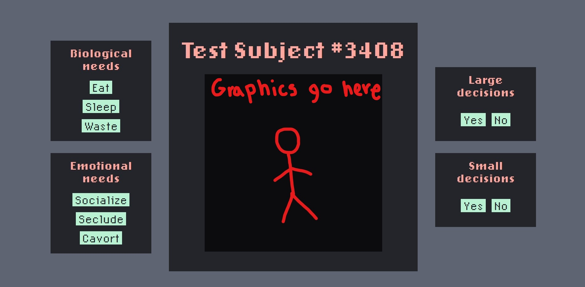

Project Brief
Tagline:
A short-form web game addressing the fleeting 'normalacy' that we humans seem to try to cling to during various moments of our lives.
Gameplay description:
Over the course of 2 minutes, the player will have a limited sort of control over a 'subject' human as they grow older, tend to their bodily needs, and make life decisions.
The game's speed, complexity and format will change rapidly as the player progresses, simulating the turbulent and inconsistend changes one goes through in life.
As the game changes, it will be blantantly and overtly informing the player to 'adapt', and that this most recent change is 'the new normal'.
Software used:
- HTML, CSS, and JavaScript (programming)
- Aseprite (pixel art)
- Premiere Pro / After Effects (visual effects and/or cutscenes)
Techniques:
- Stop motion (pixel art subject animations)
- Sound effect creation
- Audio/visual syncing
- CSS animation (moving clickable objects, web page in/out transitions, etc.)
- Possible soundtrack creation?
Style Guide
Colours:
White (background)
Black (text)
Grey (fine print)
Blue (buttons & links)
Blue (hover)
Blue (dark)
Font usage:
- Body text: LoRes 12 OT Regular
- Headers: LoRes 12 Bold Alt Oakland
Graphics:
![[subject stage 1]](subject/CART212_1.png)
Subject (youth)
Layout:
- Central box with 'test subject' displayed
- Biological and emotional needs to the left
- Large and small decisions to the right
- Headers (title, game time, etc.) above, and footers (external links) below
